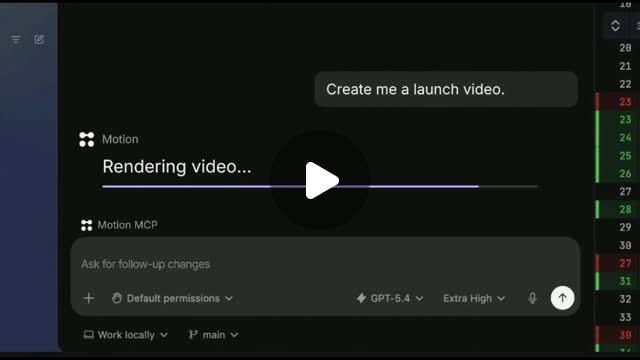

Threads｜Kufu 酷服：Motion MCP 讓 Codex 與 AI Agent 把產品素材轉成發布影片工作流

一句話摘要
這則分享的重點不是「Codex 突然會生成影片」，而是 Motion 把影片製作能力透過 MCP 開放給 AI Agent：Agent 能先上傳素材、建立影片任務、取得完成狀態，並在成片後用後續指令調整。
原始串文重點
Threads 作者 Kufu 酷服指出，Motion 展示了將 Codex 接上 Motion MCP 的產品發布影片流程：使用者提供圖片、影片等素材並描述目標效果，Agent 即可呼叫 Motion 建立場景、動畫與轉場。
串文補充的可用能力包括：建立影片、上傳素材、查詢生成狀態，以及對已完成影片追加修改節奏、文案與視覺。作者也正確提醒，這比較像把「製作 launch video」變成可委派的 Agent 任務，而不是替 Codex 新增一個內建影片模型。
官方查核：Motion MCP 實際提供什麼
Motion 官方的「MCP Server & AI Agents」文件確認：
- MCP 端點是 https://mcp.motion.so/mcp ，由 OAuth 2.1 授權伺服器保護。
- 相容的 MCP 用戶端加入端點後，可透過瀏覽器 OAuth 授權；一般使用情境不需另填 API key，但 Agent 會以使用者身份與其 Motion credits 執行。
- `create_video` 可非同步從文字 prompt 建立影片，並可選擇比例、長度、design system、`design_md`、YouTube 風格參考網址，以及最多 100 個附件。
- `upload_asset` 會為本機圖片、影音或音訊取得簽名上傳網址；Motion 無法直接讀取 `file://` 路徑，上傳後必須將回傳的 `attachment_url` 放進影片任務。
- `create_followup` 可針對已完成影片做後續精修；`get_session_status` 可重新取得任務與完成後的下載網址。
- 官方亦列出額度查詢、購買 credits、付款設定與服務帳號機制。因此「可自動化」不等於「無成本」或「不需要治理」。
官方文件也說明，支援 MCP Apps 的宿主（包括 ChatGPT Apps 與 Claude）可在對話內呈現互動式影片與方案/額度元件。串文提到 Codex 的展示，來源是 Motion 官方 X 帳號；本文未將其延伸解讀成 OpenAI 對 Codex 內建影音模型的公告。
可複用的產品發布工作流
- 準備品牌資產：產品截圖、Logo、UI 錄影、圖片、既有影片與文字訊息；先確認自己擁有使用權。
- 在 Agent 用戶端新增 Motion MCP 端點，完成 OAuth 授權，並確認帳號 credits、付款方式與可用範圍。
- 由 Agent 上傳本機檔案，取得可用的附件 URL；不要只在 prompt 寫電腦上的檔案路徑。
- 輸入清楚的影片 brief：受眾、目的、長度、比例、腳本、CTA、語言、品牌色與禁止事項；必要時提供 `design_md` 或參考影片。
- 先產生草稿，再用 follow-up 指令針對文案、節奏、鏡頭、配樂、字幕與品牌一致性逐輪修改。
- 下載前由人檢查產品事實、Logo/商標、語言、字幕、音樂與素材授權；對外發布前保留人工核准關卡。
對教學與團隊的意義
MCP 將「程式代理」可呼叫的範圍延伸到影片產製。對小型產品團隊而言，最實際的價值是把原本分散的素材整理、影片 brief、產製請求與修改回合串成一條可追蹤流程；但它不能取代產品行銷策略、創意方向與最終發布責任。
特別適合把它定位成「短影片初稿與版本迭代」：開發完成後，以既有介面截圖、Demo 錄影與品牌規範生成候選版本，再由行銷或產品負責人選稿、校對並上線。
風險與導入檢核
- 授權與費用：OAuth 讓 Agent 可使用帳號權限與 credits；要先設定最小權限、可接受的預算與付款治理。
- 素材隱私：上傳至外部服務前，移除客戶資料、內部 URL、機密畫面與未公開產品資訊。
- 品牌與事實：生成影片可能誤植價格、功能、時間或 UI；公開前必須人工核准。
- 版權：圖片、配音、音樂、影片片段與風格參考都需確認授權，不因 AI 生成而自動可商用。
- 範圍界線：官方文件證實 Motion MCP 能建立與調整影片任務，但不保證每一個宿主（包含 Codex）都有相同 UI、細粒度編輯能力或地區/方案可用性。
原始連結
- Threads 原分享：https://www.threads.com/share/BBQjHIdivk/
- Threads canonical：https://www.threads.com/@kufutw/post/DdVF8ZCEsmd
- Motion 官方 X 貼文：https://x.com/motion_so/status/2099542179697902025?s=20
- Motion MCP 官方文件：https://docs.motion.so/guides/mcp
- Motion MCP 端點：https://mcp.motion.so/mcp